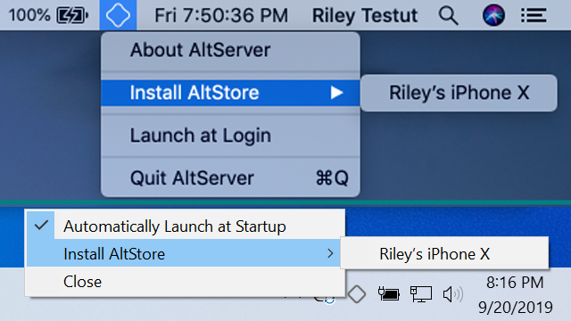
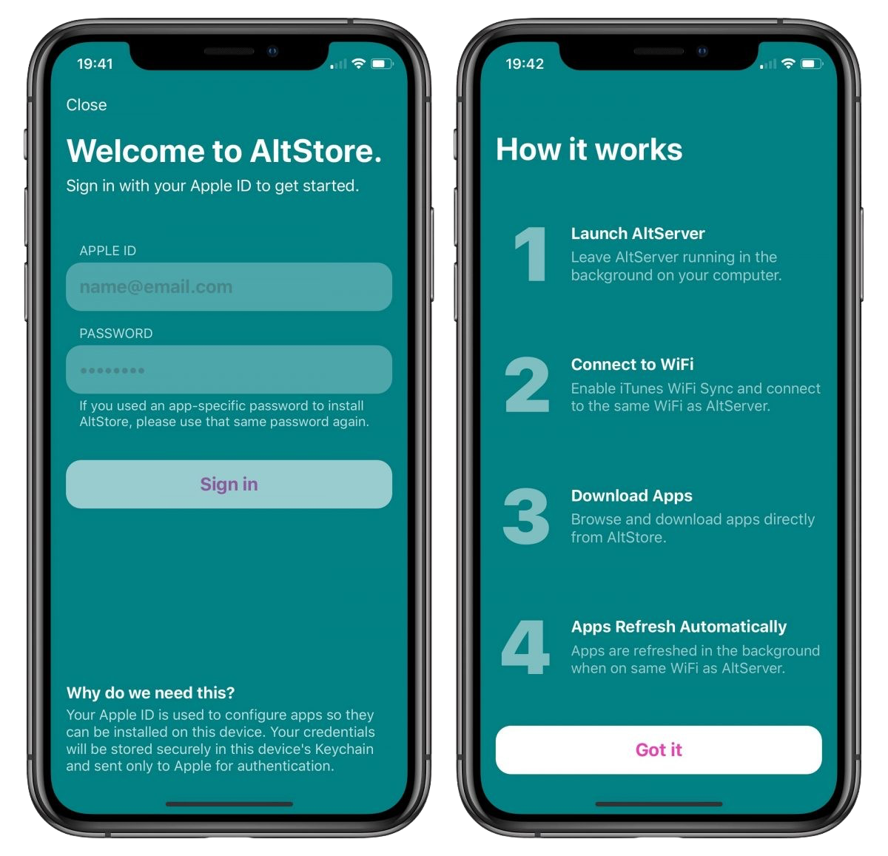

What is sideloading?
Sideloading is the process of installing programs onto a device through sources other than the ones given by the device manufacturer.
Apple requires all apps to be digitally signed, AKA, 'approved' before launching on your device.
Applications can be signed in two ways.
1. Use of personal Apple ID (Free)
2. Use of external App Signing services (Some free / Some paid)
The following guide will be covering the first method, using a free Apple ID to install apps with a Mac or PC.
This method has a limit of 3 apps per Apple ID, and apps must be resigned after 7 days.
To sideload apps without a PC or 7 day limits, consider using a signing service.
Sideloading applications with Apple ID
Things you'll need:
1. Free Apple account (can use burner)
2. PC or Mac computer
3. Sideloadly or
Altstore
Sideloadly
To begin, download the iOS application that you want to install.
iOS applications are packaged as IPA files and can be found from many sources.
For this guide, we will be installing the Provenance Emulator from Provenance-emu.com as an example.
Download the IPA (the iOS application) file to your computer.

Once you have Sideloadly installed on your Mac/PC, launch the program.
Sign in with the Apple ID you wish to use (a burner account is fine), and make sure your device is selected in the top menu pictured below.

Once these steps are compelete, simply drag your IPA file into Sideloadly and the program will do the rest!
After sideloadly has installed your app, you must trust the sideloaded application from your settings app so it will launch on your device.
Navigate to Settings > General > VPN & Device Management to trust your app, as pictured below.

Once you have trusted your app, you are done! Enjoy your new sideloaded application!
Altstore
First, you will need to install Altserver on your PC/Mac from altstore.io
For help installing AltServer on your computer, check out the Altstore FAQ Page
Once you have Altserver installed and running, install the Altstore app to your device as pictured below.

Once the Altstore app is installed on your device and trusted from within the Settings App, launch the app on your device and sign in to the Apple account you want to sideload applications with.

Now that your Apple ID is linked to Altstore, you are able to download and install apps with Altstore!
Note - Apps installed with Sideloadly or Altstore must be resigned every 7 days.
With Sideloadly, drag the IPA for your app into Sideloadly again and it will resign it for you.
With Altstore, click "Refresh" in the Altstore app while having Altsever running on your computer and it will resign your apps for you.
Resigning apps after the 7 day period will not cause you to lose any data, the apps will simply refresh and begin launching again as normal.
If you want to install unlimited apps without using a PC or having a 7 day limit, check out our signing services page for more information.